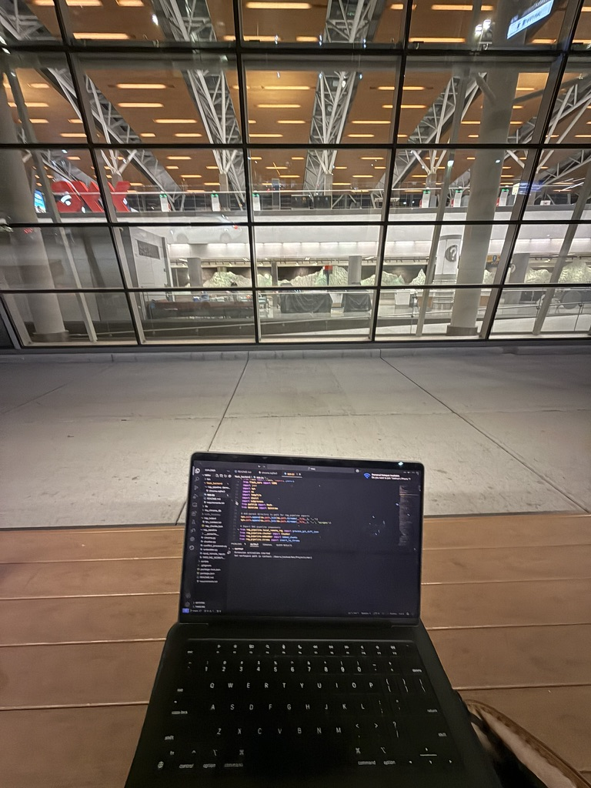
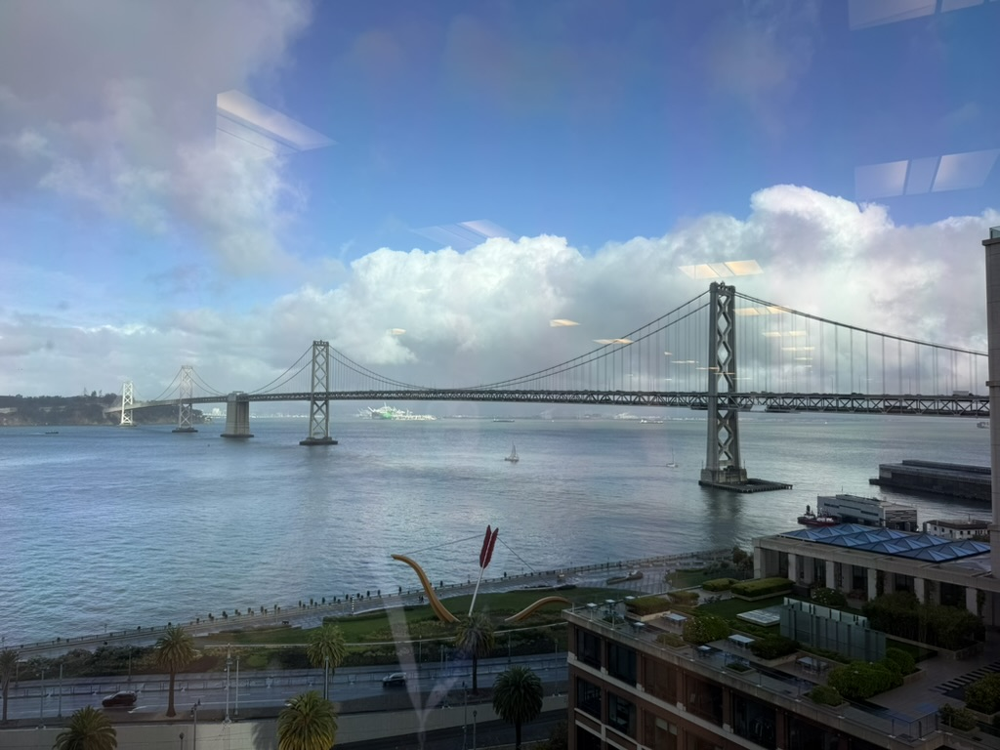
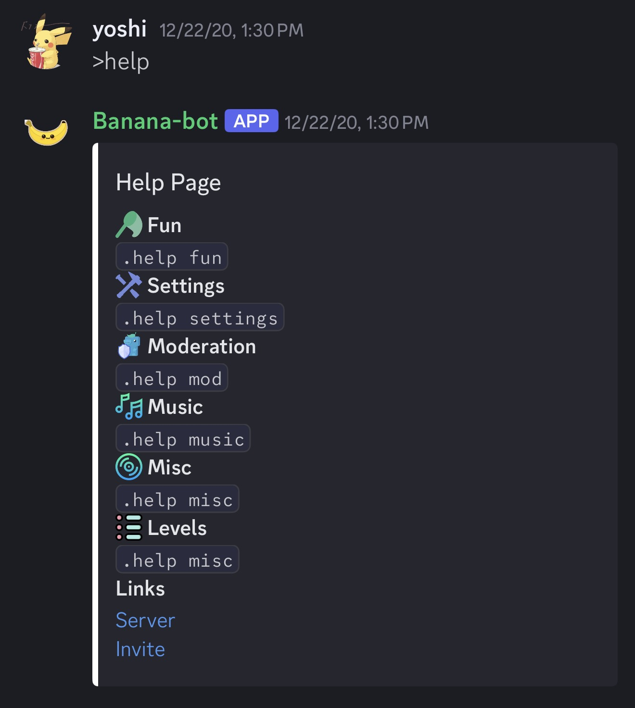

Projects

waiting for uber in Calgary
GPT from scratch, by hand
Python, PyTorch · github
-
Finished with backprop and MLP layer, working on weight initialization
Merj — CalHacks 2025, 1st Place
Git, Bash, Python, Chroma, JavaScript · devpost · github
-
A CLI tool for context and user intent aware merge conflict solutions. Won developer track and CodeRabbit later adopted Merj to production.

view from CodeRabbit's office

help page and commands
BananaBot
Python, SQLite, Heroku · github
-
My first coding project - a little discord bot I built during Covid. Deployed in 60+ servers
Built without AI and with StackOverflow :)